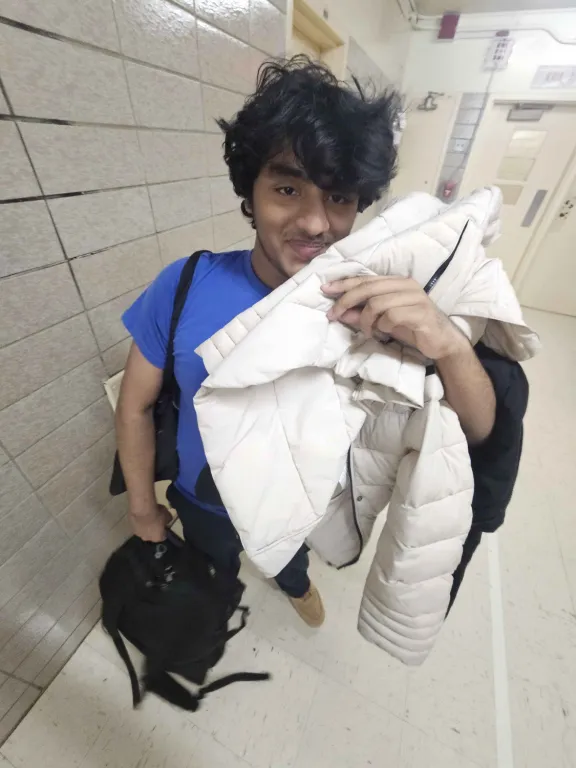
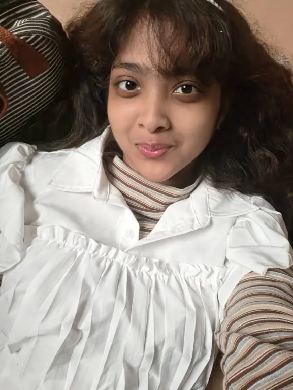
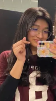
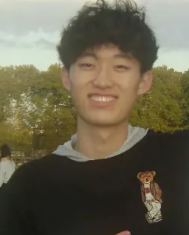
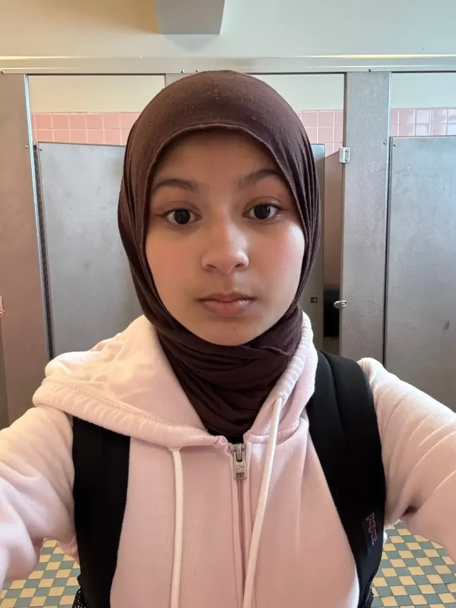
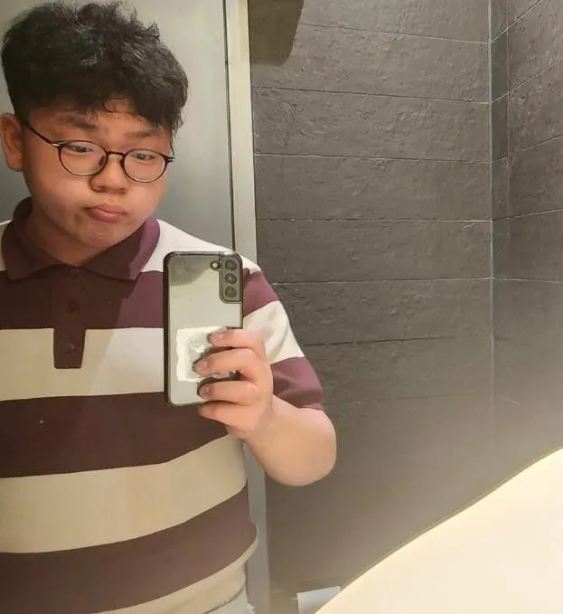
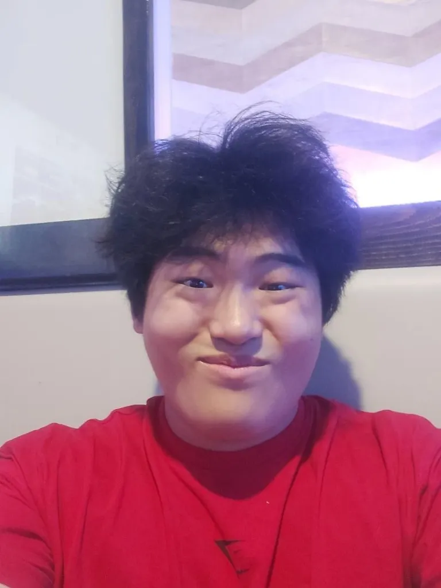
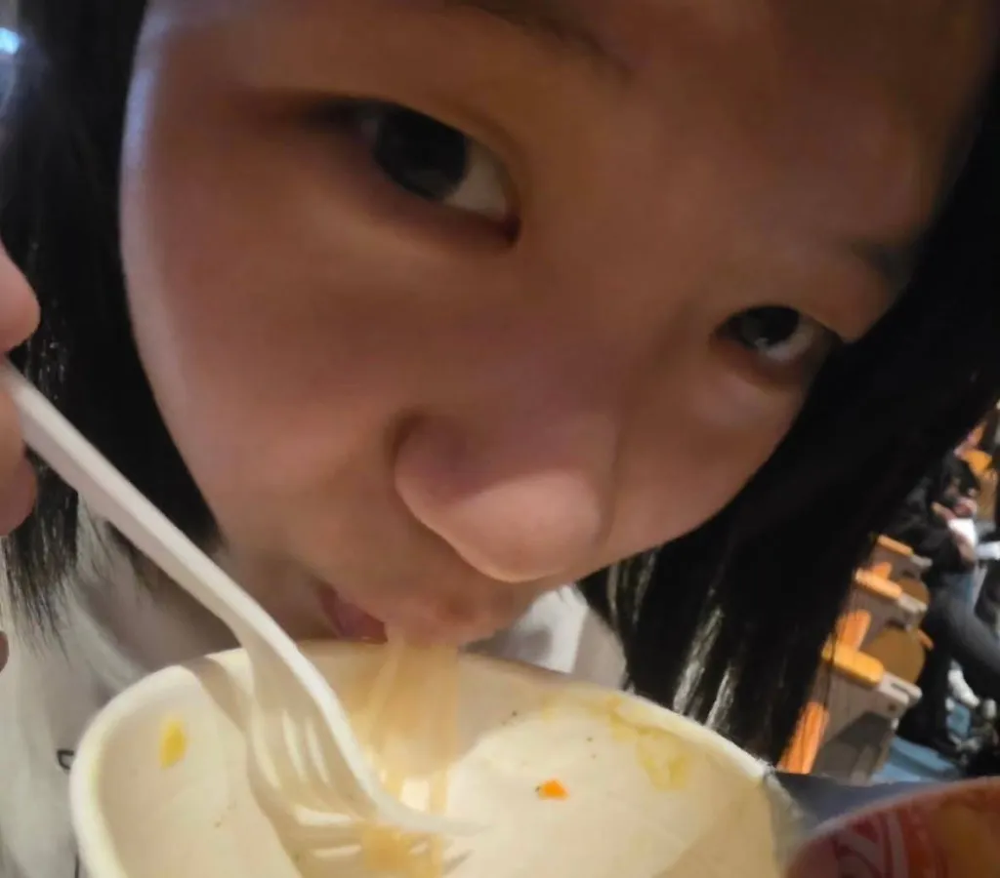
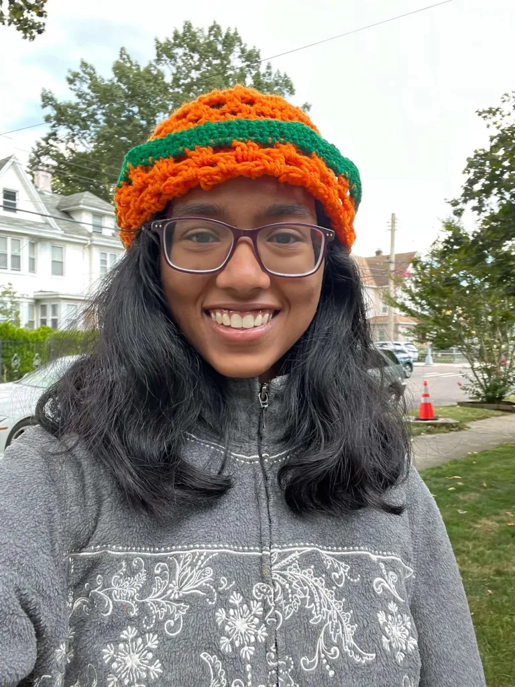
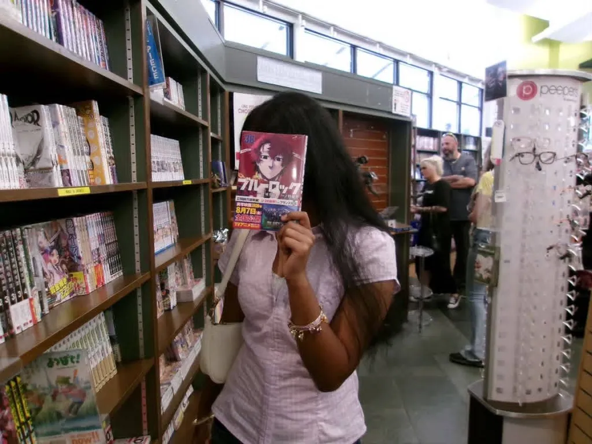

Shakespeare James
Director / Co-founder
Howdy! My name is Shakespeare and I'm the other Project Mango co-founder. I decided to co-found Project Mango to help create a community that truly embodies my values. In my free time, you'll find me building PCs, working on a project, or playing video games with my friends!

Tanisa Rahman
Director / Co-founder
Hi, I'm Tanisa! I co-founded Project Mango because I experienced immense difficulty in trying to find my passions while managing academics. I wanted to guide students through this difficult process so that they would find confidence in their future prospects. In my free time, I enjoy baking, photography, and writing.

Maliha Rahman
Deputy Director
Hi, I'm Maliha! I'm a student at Bronx Science who is interested in medicine and youth civic work. I joined Project Mango to pay forward the academic support that shaped me, turning tutoring into a bridge for youth to build confidence and unlock their potential.

Ethan Chin
Deputy Director
Hi, I'm Ethan! I'm a junior at the Bronx High School of Science, and I love to play sports, hang out with friends, and make origami! I wanted to join Project Mango to offer other children the services that I had access to growing up. Many children have fewer educational opportunities for a multitude of reasons, so I want to contribute as much as I can to even the playing field and grant them the help and support they deserve.

Sadia Sanjia
Co-Secretary
Hi, I'm Sadia, a co-secretary of Project Mango! I helped start this project because I believe students from underrepresented communities deserve access to free academic support, so they can have the same opportunities to grow and shape their futures. I care deeply about creating a space where everyone feels encouraged, understood, and able to learn without cost being an obstacle. In my free time I enjoy writing, reading, and listening to music.

Ethen Kang
Co-Secretary
I'm Ethen, a senior at Bronx Science interested in music and research. I wanted to join Project Mango because I like its mission of helping students collaborate and learn together. In my free time, I write, explore topics I find interesting, and play cozy games.

Ian Jung
Tutoring Lead
Hi, my name is Ian! I am a senior at The Bronx High School of Science. I joined Project Mango because I've come to the realization that not everybody has the privilege of having a supportive environment or resources, so I want to give back to the community through Project Mango. On a different note, I am Korean-American and like playing video games. I look forward to being your tutor officer!

Gigi Liu
Graphic Design Lead
Hello! My name is Gigi, and I'm the graphic design lead for Project Mango. You can find me reading webtoons on my phone or drawing Hatsune Miku on my iPad. I love to draw FlyGuys on my friends' notes and collect merch of my favorite fictional characters.

Maliha Noreen
Summer Research Lead & Tutor
Hi, my name is Maliha Noreen! I tutor mathematics and help with article writing in Project Mango because I want other students to see how interesting learning can be. In my free time, I enjoy crocheting, solving jigsaw puzzles, and riding my bike.

Akshara
Graphic Designer
Hi! My name is Akshara, and I am a sophomore in NC! I joined Project Mango because I resonate with Project Mango's mission and want to help students who are struggling. In my free time, I love to draw, write, and listen to music :)